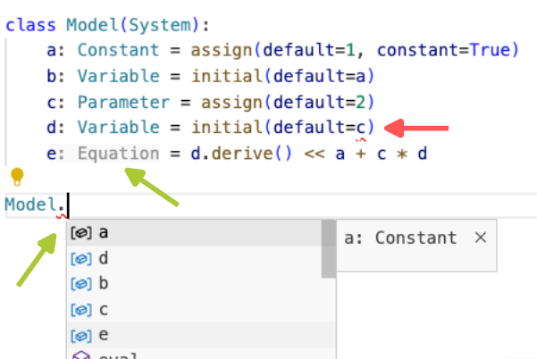
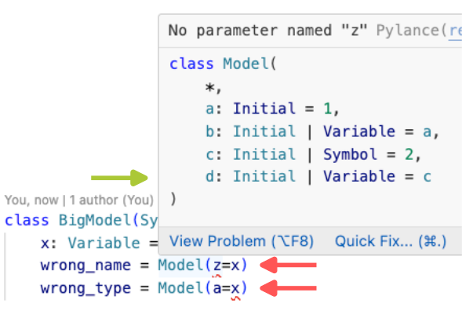
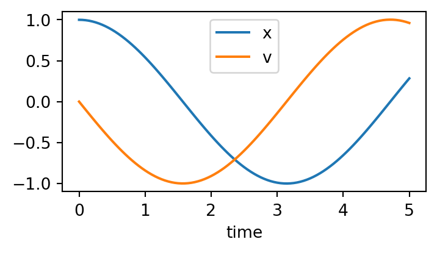
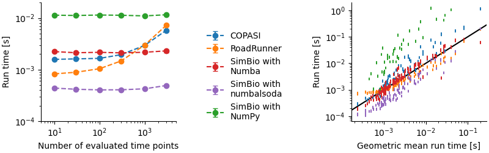

Poincaré and SimBio: a versatile and extensible Python ecosystem for modeling systems.
Mauro Silberberg ![]()
Rahuman S. Malik-Sheriff
Hernán E. Grecco
Chemical Reaction Networks (CRNs) are a fundamental concept of modelling in numerous fields, including systems biology, biochemistry, chemical engineering and epidemiology. Formulating them in a higher-level description allows to solve them with different approaches, such as deterministic or stochastic simulations. Existing Python tools for CRN modeling wrap external C/C++ libraries for modelling and simulation, which limits their extensibility to new simulation approaches or to reuse packages from the vast Python community. This work introduces two novel Python packages: Poincaré, for definition and simulation of dynamical systems, and SimBio, which builds on top of Poincaré to facilitate the definition of Chemical Reaction Networks (CRNs), and add support for the Systems Biology Markup Language (SBML). Poincaré and SimBio are pure Python packages, which allows to extend their simulation capabilities by writing Python or leveraging other Python packages. But this does not compromise performance, as code can be Just-In-Time compiled with Numba, and benchmarks show comparable or superior performance to other tools. Additionally, to ensure a user-friendly experience, they use of standard typed modern Python syntax that provide a seamless integration with Integrated Development Environments (IDEs), enhances code analysis tools, enabling error identification before execution, and facilitates code completion and refactoring. We believe that this Python-centric approach positions Poincaré and SimBio as valuable tools for the modeling community.
1 Introduction
Chemical Reaction Networks (CRNs) are a fundamental concept of modelling in numerous fields including systems biology, biochemistry, chemical engineering and epidemiology. They are comprised of a set of chemical species or biological entities and representation of complex interaction and transformation between them through a series reactions. These systems can be modelled and simulated through multiple approaches: deterministic Ordinary Differential Equations (ODEs) to model macroscopic behavior, Stochastic Differential Equations (SDEs) to model microscopic fluctuations, and jump processes (Gillespie-like simulations) to account for the discreteness of populations. Instead of directly writing the equations for each of these formulations which is error-prone and difficult to reuse, these models can be written in a higher-level description that can be compiled for these different types of simulations.
Several tools already exist for defining and simulating CRNs. BioSimulators.org (Shaikh et al. 2022), a registry of simulation tools, list at least 15 Python software including COPASI (Hoops et al. 2006), Tellurium (Choi et al. 2018) and PySB (Lopez et al. 2013). COPASI is a standalone software with a GUI for defining and simulating models. It’s widely used for its user-friendly interface and comprehensive features. There are also python bindings and interfaces for COPASI to allow advanced scripting. Tellurium is a Python-based modeling environment, however, it uses a C++ library called libRoadRunner in the backend to simulate models. PySB is a Python library that created a DSL using standard Python to define models which are then compiled to ODE using a Perl library called BioNetGen (L. A. Harris et al. 2016).
One limitation of these tools is that they are not extensible from Python, as they are not fully Python packages but wrap libraries in other languages to do the simulation. While they enable model definition and simulation control via Python scripts, they don’t fully leverage Python’s extensive package ecosystem. For example, in COPASI, users are restricted to predefined distributions for Random Parameter Scans and cannot utilize the diverse distributions available in scipy.stats. Similarly, Tellurium doesn’t allow the use of Python solvers, as adding new integrators requires C++ implementation.
Another challenge is the way models are written. Many tools use a Domain Specific Language (DSL) for coding, and support the System Biology Markup Language (SBML) as an exchange format (Hucka et al., n.d.), as direct SBML coding is impractical. A DSL allows reuse of code in different programming environments, but it will not be recognized by default in Integrated Development Environments (IDEs). Therefore DSLs cannot provide the development experience such as syntax highlighting, code completion, refactoring, and static analysis, unless such support is specifically developed. Tellurium uses a Domain Specific Language (DSL) called Antimony (Smith et al. 2009), which can be translated to SBML. An extension for Visual Studio Code was developed, but its maintenance could be demanding task for the systems biology community. PySB, using Python’s dynamic nature, created a DSL within Python. By default, it uses global state to create species and parameters, without assigning them to Python variables or adding them explicitly to the model, but this approach is not fully compatible with IDEs, affecting the development experience.
To overcome these limitations, we developed poincaré and SimBio, open-source Python packages for defining and simulating systems. Poincaré allows defining differential equation systems, while SimBio builds on it for defining reaction networks. They are focused on providing an ergonomic experience to end-users by integrating well with IDEs and static analysis tools through the use of standard modern Python syntax. Since they are coded in Python, every part from model definition to simulation can be extended from Python syntax. Being the first-ever pure Python packages for systems modelling, they offer extensive extensibility, from simple tasks like reusing integrators defined in other packages, to complex ones like altering the compilation process to leverage some structure in the equations. For example, using a for-loop in the compiled equations could improve the runtime performance if there is some repetitive structure in the system, as happens in spatial modelling. The models built using these packages can be introspected to create other representations, such as graphs connecting species and/or reactions, or tables with parameters or equations. Furthermore, they have a modular architecture with a clear separation of concerns, making it easier to maintain or to contribute new code, which is beneficial for developers and maintainers. We showcased the reliability of these tools by benchmarking them against the simulation results from other tools. We also highlighted the substantial performance improvements our tools offer, as this is crucial for construction and simulation of models of whole cells and organisms, which necessitate the simulation of significantly large-scale models.
2 Results
Modular code architecture makes code reusable, extensible, and easier to maintain. Therefore, we split the code to define and simulate reaction systems into three Python packages: symbolite, to create symbolic expressions; poincaré, to define dynamical systems; and simbio, to define reaction systems and interface with systems biology standards such as SBML. These are pure Python packages with standard dependencies from the PyData scientific stack such as NumPy (C. R. Harris et al. 2020) and pandas (McKinney 2010). They are published in PyPI (the Python Package Index), where links to the source code and documentation hosted in GitHub can be found, and can be easily installed with pip install <package_name>.
Symbolite is a lightweight symbolics package to create algebraic mathematical expressions. Symbolite expressions can be inspected and compiled to various backends. Currently, we have implementations for NumPy (C. R. Harris et al. 2020); Numba (Lam, Pitrou, and Seibert 2015), a Just-in-Time (JIT) compiler to LLVM; SymPy (Meurer et al. 2017), a library for symbolic mathematics; and JAX (Bradbury et al. 2018), a library that support automatic differentiation and compilation to GPUs and TPUs. Symbolite is designed to facilitate the easy integration of new backends.
2.1 Versatile modelling and simulation of dynamical systems with Poincaré
from poincare import Derivative, System, Variable, initialclass Decay(System):
x: Variable = initial(default=1)
eq = x.derive() << -x\[ \frac{dx}{dt} = -x \]
\[ x(0) = 1 \]
x stores the initial condition for \(x\), and the variable eq stores the rate equation for \(x\).class Oscillator(System):
x: Variable = initial(default=1)
v: Derivative = x.derive(initial=0)
eq = v.derive() << -x\[ \frac{d^2x}{dt^2} = -x \]
\[ \begin{cases} x(0) &= 1 \\ \frac{dx}{dt}(0) &= 0 \end{cases} \]
v stores the derivative \(\frac{dx}{dt}\) and the rate equation is specified for the derivative v.class BigModel(System):
x: Variable = initial(default=1)
linked = Decay(x=x)
independent = Decay(x=2)\[ \begin{cases} \frac{dx}{dt} = -x \\ \frac{dy}{dt} = -y \end{cases} \]
\[ \begin{cases} x(0) &= 1 \\ y(0) &= 2 \end{cases} \]
Decay system. The subsystem linked has a reference to the outer variable x, while the subsystem independent defines a new variable with initial condition §2$, which on the corresponding mathematical expression was named \(y\).Poincare is a package to define and simulate dynamical systems. It provides a System class, where one can define Constants, Parameters, Variables, and create equations linking a variable’s derivative with an expression (Figure 1 (a)). It also allows to define higher-order systems by assigning an initial condition to a Derivative (Figure 1 (b)).
Utilizing classes for system definition offers several advantages:
- The variable name to which a component is assigned can be automatically saved in the component for introspection (i.e.,
Oscilator.x.name == "x"), - It provides a namespace such that allows to easily define of multiple independent models in the same script,
- It allows IDEs to provide autocomplete and refactoring capabilities (
Oscillator.<TAB>showsx,vandeq), - It allows creation of instances which can be composed into a bigger model (Figure 1 (c)).
For this last point, IDEs that support dataclass_transform (De Bonte and Traut 2021) can provide a tooltip with the expected signature (Figure 1 (c)). This requires the use of type annotations which play a more significant role in static type checking, as they can help to identify errors before running the code. For instance, to parameterize the initial conditions of variables we have to use a Constant. If we try to use a Parameter, which could be a time-dependent expression, it is flagged as a type error (Figure 2).


Constant are assigned with assign(..., constant=True) and can be used to link Variables initial conditions, while trying to use a Parameter instead is flagged as type errors (red underlining). The IDE automatically recognizes e as an Equation, and provides autocompletion of the variables. A tooltip is shown when composing models, which show the expected variables and their default values. The IDE highlights wrong names (z is not a name in Model) and mismatched types (x is Variable and a must be a number or a Constant)To simulate a system, we created a Simulator instance (Figure 3), which compiles a given system and interfaces with solvers. By default, it creates a first-order ordinary differential equation (ODE) system using numpy as a backend. This can be easily switched to other solvers. The Simulator wraps the output in a pandas.DataFrame, which can be easily plotted with the standard plot method.
import numpy as np
from poincare import Simulator
sim = Simulator(Oscillator)
df = sim.solve(save_at=np.linspace(0, 5, 101))df.head()| x | v | |
|---|---|---|
| time | ||
| 0.00 | 1.000000 | 0.000000 |
| 0.05 | 0.998750 | -0.049979 |
| 0.10 | 0.995005 | -0.099835 |
| 0.15 | 0.988772 | -0.149440 |
| 0.20 | 0.980069 | -0.198672 |
df.plot();
Oscillator system from Figure 1 (b). The output is a pandas.DataFrame with a column for each variable and the time as index. It is inspected and plotted with the pandas methods.Switching backends to "numba" can improve model runtime on a factor up to x30 or more for big or long running models, however incurs in a compile time penalty for the first run which must be taken into account.
2.2 Extensible definition of reaction networks using SimBio
from simbio import Compartment, MassAction, Species, Reaction, initialclass Model(Compartment):
"""2A -> B"""
A: Species = initial(default=1)
B: Species = initial(default=0)
r = Reaction(
reactants=[2 * A],
products=[B],
rate_law=1,
)\[ \begin{align} &\begin{cases} \frac{dA}{dt} = -2 \\ \frac{dB}{dt} = +1 \end{cases} \\\\ &\begin{cases} A(0) &= 1 \\ B(0) &= 0 \end{cases} \end{align} \]
class Model(Compartment):
"""2A -> B"""
A: Species = initial(default=1)
B: Species = initial(default=0)
r = MassAction(
reactants=[2 * A],
products=[B],
rate=1,
)\[ \begin{align} &\begin{cases} \frac{dA}{dt} = -2 A^2 \\ \frac{dB}{dt} = +1 A^2 \end{cases} \\\\ &\begin{cases} A(0) &= 1 \\ B(0) &= 0 \end{cases} \end{align} \]
r. The rate \(1\) is specified directly for Reaction, and is proportional to the reactants for MassAction.For the reaction networks, our focus is on first-order differential equations that describe the rate of change of species. SimBio simplifies the definition of these network models by introducing Species, which consists of a poincare.Variable and a stoichiometric number, and Reaction, a construct that converts reactants into products taking into account the stoichiometry (Figure 4). Additionally, SimBio features MassAction, a subclass of Reaction, which intuitively incorporates reactants into the rate law (Figure 4).
Several commonly used reactions are predefined as MassAction subclasses, such as MichaelisMenten (\(S + E \leftrightarrow ES \rightarrow P + E\)) and its approximate form without the intermediate species \(ES\), and it is also simple to implement your own as subclasses of Reaction or MassAction. Additionally, SimBio supports importing from and exporting to SBML, and downloading them directly from BioModels (Malik-Sheriff et al. 2020) (Figure 5).
from simbio.io import biomodels, sbml
model = sbml.load("repressilator.sbml") # from existing SBML file
model = biomodels.load_model("BIOMD12") # from BioModels
model| Elowitz2000 - Repressilator | ||
|---|---|---|
| type | total | names |
| variables | 6 | PX, PY, PZ, X, Y, Z |
| parameters | 17 | cell, beta, alpha0, alpha, eff, n, KM, tau_mRNA, tau_prot, ... |
| equations | 12 | Reaction1, Reaction2, Reaction3, Reaction4, Reaction5, ... |
2.3 Reproducibility and performance

To evaluate SimBio’s reproducibility, we analyzed curated SBML models from BioModels (Malik-Sheriff et al. 2020). Among the first 100 curated models from BioModels we selected 60 which did not contains events, as SimBio doesn’t support events yet. We simulated the selected models with COPASI and used the simulated results as ground truth, and demonstrated that SimBio reproduces the results with minor numerical differences depending on the solver tolerance.
For performance testing, we ran simulations using COPASI, Tellurium/RoadRunner, and SimBio. Within SimBio, both NumPy and Numba backends were considered. The LSODA solver was used for COPASI and SimBio, while for Tellurium the comparable CVODE solver was used. In all cases, we used relative and absolute tolerances of \(10^{-6}\). We measured three simulation stages: loading, the initial (cold) run, and subsequent (warm) runs for each model.
For COPASI and Tellurium/RoadRunner, we noted that its runtime depended on the number of evaluation points, something that does not seem to happen with SimBio (Figure 6, left). While SimBio’s NumPy backend is slower than both COPASI and RoadRunner, we obtained an order of magnitude speed-up using the numba backend putting it on par with them. A user might have to consider the trade-off between compilation and run times, as the compilation of the right-hand-side (RHS) code might take longer than the runtime itself, and not be worth it for running the model only once. Another speed-up in the runtime can be had by switching the LSODA scipy solver for a more efficient numbalsoda implementation, which avoids the Python interpreter between each of the integration steps. This last combination beats all other methods, which is also true for the other models we tested (Figure 6, right).
3 Discussion
In this article, we introduced a suite of Python packages we developed for defining and simulating dynamical systems and reaction networks. These packages are deeply integrated with Integrated Development Environments (IDEs), enabling code analysis tools to identify errors prior to execution and assist in refactoring and code completion. We adopted standard modern Python syntax to ensure seamless IDE integration, supported by the extensive Python community.
Our approach differs from previous tools in that both the model definition and its compilation into an Ordinary Differential Equation (ODE) function are entirely Python-based. This approach simplifies the development of various simulation methods, including performance enhancements that exploit specific model structures. Importantly, being Python-based does not compromise performance compared to C/C++ tools, as the ODE functions can be Just-In-Time (JIT) compiled using Numba.
The inclusion of SBML support facilitates the effortless reuse of models created by the systems biology community, along with the vast collection of public models hosted in the BioModels repository. The modular architecture of these packages facilitates their reuse, enhancement, and extension by the wider Python community. For instance, an individual from outside the systems biology field could contribute a stochastic integrator to poincaré, which would then be available in SimBio. This clear separation of concerns also makes the packages more comprehensible, lowering the barrier for contributing improvements or new features. Such an architecture ensures their maintainability and ongoing development well into the future.